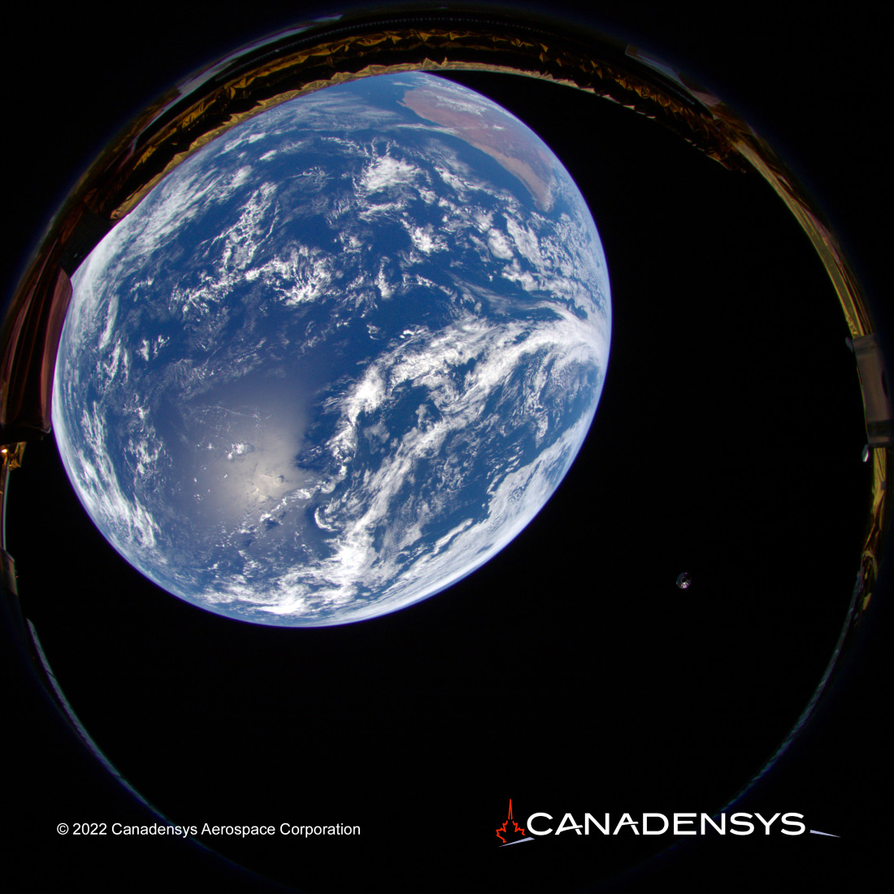
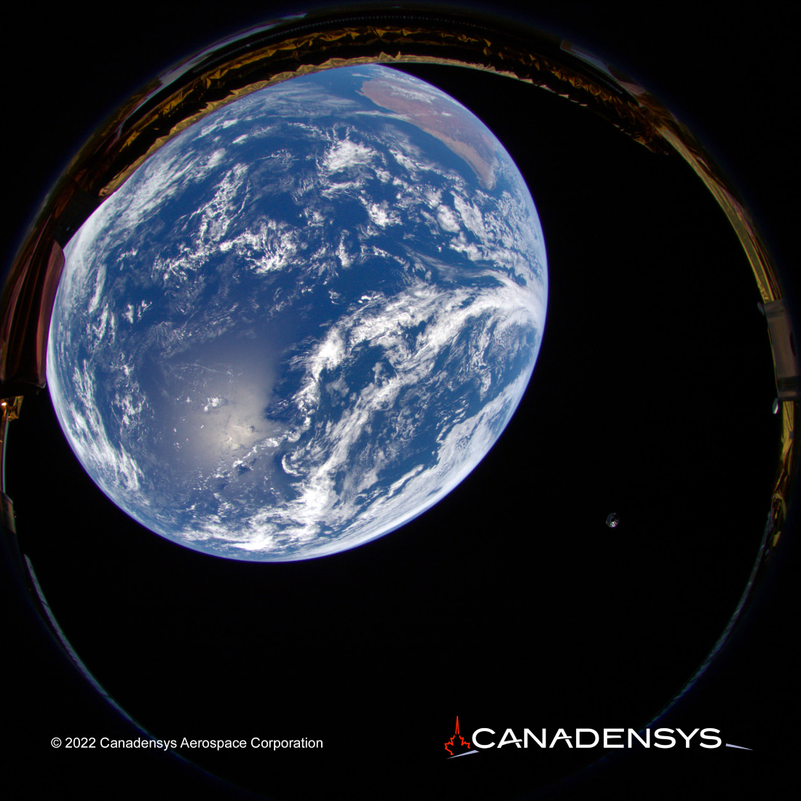

Canadensys
Aerospace Engineering Intern
May 2022 - August 2022
Working at Canadensys, my role centered around supporting the manufacture and testing of an engineering model and flight camera builds to be delivered to a commercial client. As a smaller aerospace company, I had the opportunity to get hands-on experience working with equipment bound for space. Work was conducted in conducting mechanical and electrical tests of the cameras including qualifying the PCBs and conducting thermal and vibrational tests at partner testing locations. Work was also conducted to consolidate past manufacturing experiences and create a streamlined manufacturing and testing process while adhering to the strict qualification and regulatory rules surrounding aerospace equipment.
I also had the opportunities to conduct some R&D work in advancing the company's knowledge in optical focusing and flat field testing. This was a result of discovering inconsistencies in the company's previous testing and calibration processes and developing workarounds to facilitate more accurate cameras builds in the future. Design work was also conducted in developing a test jig platform using SolidWorks to qualify camera lens focus degradation under low vacuum environments.
Canadensys Aerospace Corporation is a space systems and advanced vehicle development company founded on the heritage and expertise that spans a number of Canada’s historic space achievements of the last three decades. The company blends their heritage with micro and nano space technology and smart, ruggedized vehicle designs to develop unique solutions for planetary, orbital and terrestrial environments based on modern, commercial business approaches to space program and mission development.
 
